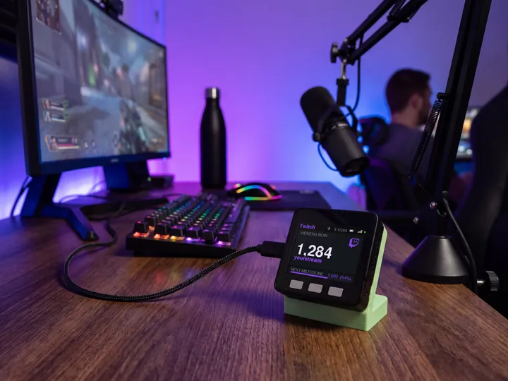
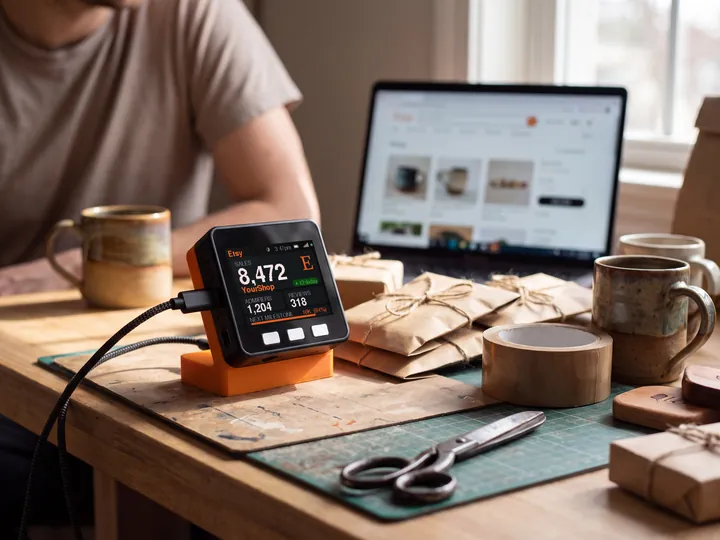

socialMeter for Wikipedia
A Wikipedia page view counter for your desk.
How many people read a Wikipedia article over the last 30 days, and on the latest day, on a small display.

Sample numbers. Yours appear once it is set up.
On the screen
What it shows for Wikipedia.
The labels below are the ones printed on the device.
- VIEWS / 30D
- Views of the article over the last 30 days, from Wikimedia's public pageview statistics.
- LATEST DAY
- Views on the most recent day Wikimedia has published.
- DAYS
- Days counted in the window.
- N TODAY
- The green pill: page views gained since the day's first reading, in your time zone.
- NEXT MILESTONE
- A bar to the next round number (1, 2 or 5 followed by zeros), with how far along you are.
- Circle and dot
- The circle empties until the next check. The dot is green while the number is live, amber while it shows the last reading, red when something needs a look.
Checks: Every 60 seconds, but Wikimedia adds a new day of views once a day, so the number changes daily.
What you need
Set up in a few minutes.
It needs only your article: no key, no login. Your article stays on the device. No account with us, no app.
- Find your articleThe article title as it appears in its link; spaces are fine. A bare title means English Wikipedia. For another language use
project/Article, likede.wikipedia/ESP32.exampleen.wikipedia/Your_ArticleWikimedia publishes view counts a day or two behind, so the newest day is not always yesterday. - Plug it in and join its Wi-FiPower it with any USB-C cable. Scan the code on its screen (or join the Social Meter-XXXXXX network) and the setup page opens. If it does not, visit
192.168.4.1. - Choose Wikipedia and fill in one pagePick Wikipedia from the list and type your article. Leave the API-key box blank.
- Pick your home Wi-Fi and saveChoose your 2.4 GHz Wi-Fi, type its password and tap Save. It restarts and shows your number within about 30 seconds.
Try it
See your count.
Type a article and this page reads the real number from Wikipedia, the way the device does.
Same device
Or count something else.
It counts one platform at a time. Switch from your phone whenever you like.
In use
Your count, while you create.
It sits by the mic and keeps counting while you work on the next one.



7 stand colours. Pick one to start your build.
FAQ
Questions.
Why does the number only change once a day?
Wikimedia publishes pageviews in daily totals, a day or two behind. The device checks every minute and moves when a new day lands.
Does it work for other languages?
Yes. Type the project and the article, like de.wikipedia/ESP32 or fr.wikipedia/Paris.
Does it count bots?
No. It reads user views, the same filter Wikimedia's own pageview tool uses by default.
Does it need my Wikipedia password?
No. Wikipedia page views are public, so it needs only the article.
myDeskMeter